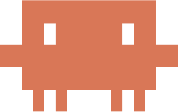

Gameplay reel editor for Claude Code
Clipfarm finds the moments worth posting in your Xbox, PS5 or PC captures and cuts each into a 9:16 reel with a hook on top. Free and open source.
One report for every Clipfarm run
ffmpeg scores every half second for sudden noise, loudness and motion, and drops cutscenes. Claude looks at each moment's frame grid, keeps the ones that read on a phone and writes the edit.
- m1ut-gtav-20:35 to 0:44Skipped0.85
- m2ut-gtav-60:20 to 0:29Skipped0.83
- m3ut-gtav-10:07 to 0:16Skipped0.83
- m4ut-gtav-51:46 to 1:55Skipped0.81
- m5ut-gtav-40:07 to 0:16Picked0.80
- m6ut-gtav-50:53 to 1:02Skipped0.79
- m7ut-gtav-20:52 to 1:01Picked0.76
- m8ut-gtav-62:06 to 2:15Skipped0.76
- m9ut-gtav-62:16 to 2:25Skipped0.75
- m10ut-gtav-10:18 to 0:27Skipped0.75
- m11ut-gtav-51:07 to 1:16Skipped0.74
- m12ut-gtav-50:09 to 0:18Picked0.74
- m13ut-gtav-40:18 to 0:27Picked0.68
- m14ut-gtav-20:21 to 0:30Picked0.66
- m15ut-gtav-50:17 to 0:26Skipped0.65
- m16ut-gtav-51:16 to 1:25Skipped0.63
Clipfarm pulls clips off your console
Clipfarm checks how clips can reach this computer, walks you through the console settings, then copies each new clip into its inbox.
Xbox: automatic, through OneDrive.
PS5: one tap in the PlayStation App, or a USB drive.
PC: your Game Bar captures folder.
The clip is the punchline
In a study of 2,355 GTA Shorts, real gameplay clips got 1.6% likes per view, more than twice any other kind. So Clipfarm writes the joke's setup as the hook and lets your clip land it.
Five reels from one run. 17 minutes of GTA V in, five loops out.
Each opens on the action with the hook on screen, slows to half speed into the hit and cuts right after it, so it loops.
Clipfarm fills in YouTube and Instagram
Claude in Chrome uploads the reel in your own signed-in browser, writes the title, caption and hashtags, and stops before the last button. You press Publish.
Clipfarm runs on your computer
It edits with ffmpeg and Remotion on your own machine. Your footage leaves it only when you upload a reel.
Every run lands in ~/Movies/Clipfarm: the report, the frame grids and the reels.

Posting needs no API keys and no developer accounts.
Install Clipfarm in two lines
Paste the two lines into Claude Code, then ask for what you want in plain words.
Needs Node 20 or newer.
The first run installs Remotion and ffmpeg. The first render downloads a headless Chrome, about 140 MB.
Codex support is written but not tested yet.
/plugin marketplace add VedSoni-dev/clipfarm/plugin install clipfarm@clipfarmThen ask in plain words, for example:
Use clipfarm to connect my Xbox and PS5 clips and turn them into reelsDoes Clipfarm get PS5 clips by itself?
No. Sony only sends PS5 clips to your phone, so each one takes a tap in the PlayStation App. Copying clips to a USB drive works too.
Does Clipfarm only work with GTA?
It was made for GTA 6 and works with any game. It skips cutscenes, menus and loading screens.
Can I earn money from these GTA reels?
Rockstar's policy allows non-commercial fan videos without story spoilers, and does not cover making money from the footage.
Is Clipfarm free?
Yes. It is open source under the MIT licence and runs on your own Claude plan.
Does Clipfarm work in Codex?
The Codex plugin is written but not tested yet. Claude Code is the one that works today.
Will Clipfarm post without asking me?
No. It fills in the upload and stops before Publish. Nothing goes up until you press it.